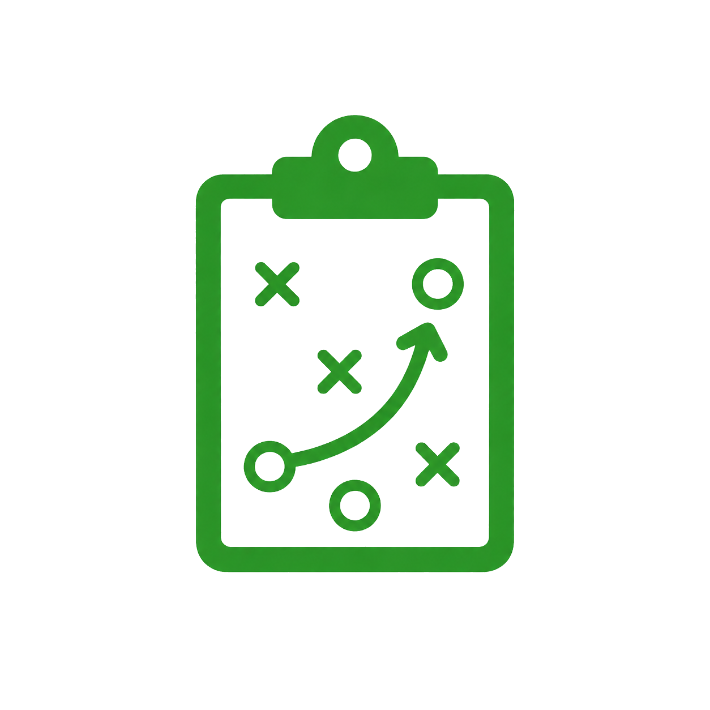

Mais que um jogo. Sua carreira. Seu clube. Sua história.
Escolha seu caminho. Jogador, Técnico, Presidente ou Seleção. O mundo do futebol espera por você.
Mundo onlineTemporada abertaNovos jogadores chegando
Bem-vindo de volta!
Entre na sua conta e continue sua jornada.
Ao continuar, você concorda com os e .
Criar conta
Cadastre sua conta para começar sua carreira.
Depois do cadastro, você poderá escolher seu papel no jogo.
Recuperar senha
Informe seu e-mail para receber as instruções.
A recuperação será enviada para o e-mail cadastrado.
JOGADOR
Viva sua carreira e seja o melhor.

TÉCNICO
Monte seu esquema e lidere seu time.
PRESIDENTE
Gerencie seu clube e construa um legado.
SELEÇÃO
Lidere seu país e conquiste o mundo.
Sobre o Futbrowser
Futbrowser é um jogo browser de futebol onde você não apenas joga partidas: você constrói uma história.
Crie sua carreira, comande um time, administre um clube ou alcance o topo defendendo uma seleção. Tudo acontece em um mundo vivo, baseado em decisões, reputação, mercado e consequências reais dentro do jogo.
As partidas acontecem em forma de narrativa, mostrando seus momentos decisivos, desempenho e impacto dentro do mundo do futebol.
Você pode começar como um jogador desconhecido tentando ser notado, virar um técnico respeitado por fazer times renderem, ou assumir a presidência de um clube e transformar uma equipe pequena em potência.
CarreiraGestãoPressãoMercadoLegado
Futbrowser é um mundo de futebol por texto, onde sua história é construída decisão por decisão.
Ajuda
Precisa de ajuda para começar? Veja as principais dúvidas sobre o Futbrowser.
Como funciona o jogo?
Futbrowser é um jogo browser de futebol baseado em decisões, carreira e partidas narradas por texto.
Preciso baixar algo?
Não. O jogo roda direto pelo navegador.
Quais caminhos posso escolher?
Você pode jogar como Jogador, Técnico, Presidente ou seguir o caminho ligado à Seleção.
Esqueci minha senha
Use a opção “Esqueci minha senha” na tela de login para recuperar o acesso.
Ainda precisa de ajuda?
Entre em contato com o suporte oficial do Futbrowser quando precisar de ajuda com sua conta.
Termos de Uso
Ao criar uma conta no Futbrowser, você concorda em usar a plataforma de forma justa, segura e respeitosa.
1. Conta do usuário
O usuário é responsável por manter seus dados de acesso seguros e por todas as ações realizadas em sua conta.
2. Uso da plataforma
Não é permitido explorar falhas, usar automações indevidas, prejudicar outros jogadores, tentar manipular sistemas do jogo ou obter vantagem injusta.
3. Conduta dentro do jogo
Ofensas, ameaças, discriminação, spam, assédio ou comportamento abusivo podem gerar punições, bloqueios ou suspensão da conta.
4. Progresso e dados do jogo
O progresso da conta pode ser ajustado em caso de bugs, abuso de sistema, falhas técnicas, exploração indevida ou necessidade de balanceamento.
5. Alterações no jogo
O Futbrowser pode receber mudanças em regras, mecânicas, sistemas, conteúdos, economia e balanceamento ao longo do desenvolvimento.
6. Punições e segurança
Contas que violem estes termos podem sofrer advertências, restrições, perda de progresso, suspensão temporária ou banimento definitivo.
Política de Privacidade
Sua privacidade é levada a sério no Futbrowser. Esta política explica quais dados podem ser coletados, como são usados, como são protegidos e quais direitos o usuário possui.
1. Dados coletados
Podemos coletar dados necessários para funcionamento da conta, como nome de usuário, e-mail, senha criptografada, informações de login, progresso dentro do jogo, escolhas, histórico, estatísticas, interações no sistema e registros técnicos de acesso, como IP, navegador, dispositivo e horário de acesso.
2. Senhas e segurança
As senhas não devem ser armazenadas em texto puro. Elas devem ser protegidas por criptografia ou hash adequado. O Futbrowser não solicita senha fora da tela oficial de login e não envia pedidos de senha por canais informais.
3. Uso dos dados
Os dados podem ser usados para permitir login e cadastro, salvar progresso, manter histórico de carreira, proteger contra fraudes, abuso, bots e exploração de falhas, melhorar sistemas, oferecer suporte e cumprir obrigações legais quando necessário.
4. Compartilhamento de dados
O Futbrowser não vende dados pessoais dos usuários. Dados só poderão ser compartilhados quando necessário para funcionamento técnico, hospedagem, banco de dados, segurança, suporte, cumprimento legal ou investigação de fraude, abuso ou violação dos Termos de Uso.
5. Dados públicos dentro do jogo
Algumas informações podem ser exibidas publicamente dentro da plataforma, como nome de usuário, nome do personagem, clube, carreira, rankings, conquistas, estatísticas públicas, notícias e eventos do mundo do jogo. Dados privados, como e-mail e senha, não serão exibidos publicamente.
6. Logs e proteção contra abuso
O Futbrowser pode registrar ações dentro da plataforma para proteger o jogo contra trapaças, ataques, bugs explorados, contas falsas, manipulação de sistemas ou comportamento abusivo. Esses registros podem ser usados para aplicar punições, bloqueios ou ajustes necessários.
7. Exclusão de conta
O usuário poderá solicitar a exclusão da conta. Alguns dados podem ser mantidos por período necessário para segurança, histórico técnico, prevenção contra fraude, cumprimento legal ou integridade do mundo do jogo.
8. Alterações nesta política
Esta Política de Privacidade pode ser atualizada conforme o Futbrowser evoluir. Mudanças importantes deverão ser comunicadas dentro da plataforma ou por outro meio adequado.
9. Contato
Em caso de dúvidas sobre privacidade, dados ou conta, o usuário poderá entrar em contato com o suporte oficial do Futbrowser.